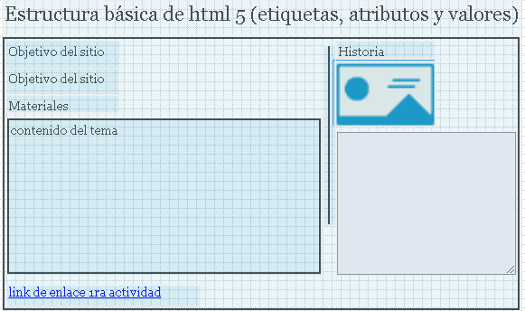

Objetivo del sitio: Crea una página web personal en código HTML con la tematica seleccionada
contenido de materiales - Perdomo Vargas, M. (2016). O.V.I. UNIDAD 1. [Página Web]. Recuperado de http://hdl.handle.net/10596/9134
https://developer.mozilla.org/es/docs/HTML/HTML5
contenido Redacte un borrador del contenido de lectura en formato de texto que tendrá la sección: HTML5 es la última versión de HTML. El término representa dos conceptos diferentes: Se trata de una nueva versión de HTML, con nuevos elementos, atributos y comportamientos. Contiene un conjunto más amplio de tecnologías que permite a los sitios Web y a las aplicaciones ser más diversas y de gran alcance. A este conjunto se le llama HTML5 y amigos, a menudo reducido a HTML5 . Diseñado para ser utilizable por todos los desarrolladores de Open Web, esta página referencía numerosos recursos sobre las tecnologías de HTML5, clasificados en varios grupos según su función. Semántica: Permite describir con mayor precisión cuál es su contenido. Conectividad: Permite comunicarse con el servidor de formas nuevas e innovadoras. Sin conexión y almacenamiento: Permite a las páginas web almacenar datos localmente en el lado del cliente y operar sin conexión de manera más eficiente. Multimedia: Nos otorga un excelente soporte para utilizar contenido multimedia como lo son audio y video nativamente. Gráficos y efectos 2D/3D: Proporciona una amplia gama de nuevas características que se ocupan de los gráficos en la web como lo son canvas 2D, WebGL, SVG, etc. Rendimiento e Integración: Proporciona una mayor optimización de la velocidad y un mejor uso del hardware. Acceso al dispositivo: Proporciona APIs para el uso de varios componentes internos de entrada y salida de nuestro dispositivo. CSS3: Nos ofrece una nueva gran variedad de opciones para hacer diseños más sofisticados.
Mockup
